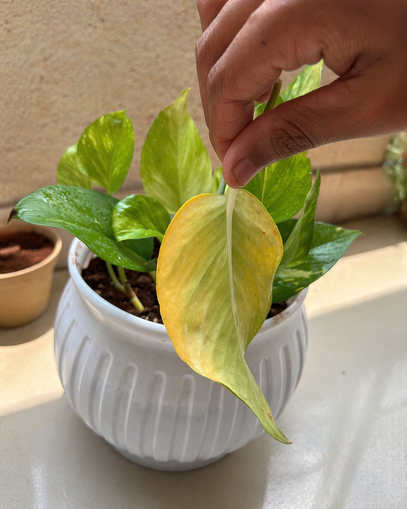
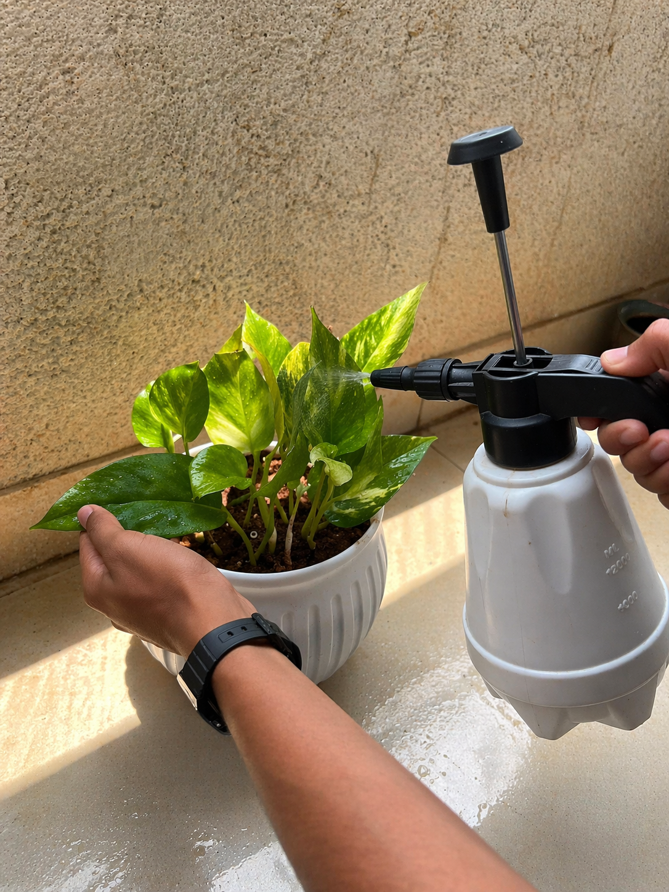

🌿 Money Plant (Basic Info)
Common Name: Money PlantScientific Name: Epipremnum aureum
Other Names: Devil’s Ivy, Golden Pothos


The Money Plant (Epipremnum aureum) is a popular indoor ornamental plant known for its attractive foliage and easy maintenance. It is a fast-growing, evergreen vine that belongs to the Araceae family and is widely found in homes, offices, and indoor spaces. The plant features glossy, heart-shaped leaves that are typically green with beautiful yellow or cream variegation, making it visually appealing and suitable for decoration.
Money Plant can grow both as a climber and a trailing plant, depending on how it is supported. When provided with a moss stick or vertical support, it climbs upward and produces larger leaves. Without support, it spreads or trails downwards, making it ideal for hanging pots and shelves. One of its most unique characteristics is its ability to grow in both soil and water, which makes it highly versatile and beginner-friendly.
This plant is well-known for its adaptability to different environmental conditions. It thrives best in bright, indirect sunlight but can also tolerate low-light environments, although its growth may slow down. Due to its hardy nature, it requires minimal care compared to most indoor plants, making it an excellent choice for beginners or people with busy lifestyles.
In addition to its decorative value, the Money Plant is often associated with good luck, prosperity, and positive energy, especially in many Asian cultures. It is also believed to help improve indoor air quality by removing certain pollutants, contributing to a healthier living environment.
Overall, the Money Plant is a perfect combination of beauty, resilience, and symbolic significance, making it one of the most loved and widely grown houseplants around the world.
📍 Plant Doctor, Maharashtra, India
📧 saihole2010@gmail.com© 2026 Plant Doctor | Made by voyager2010